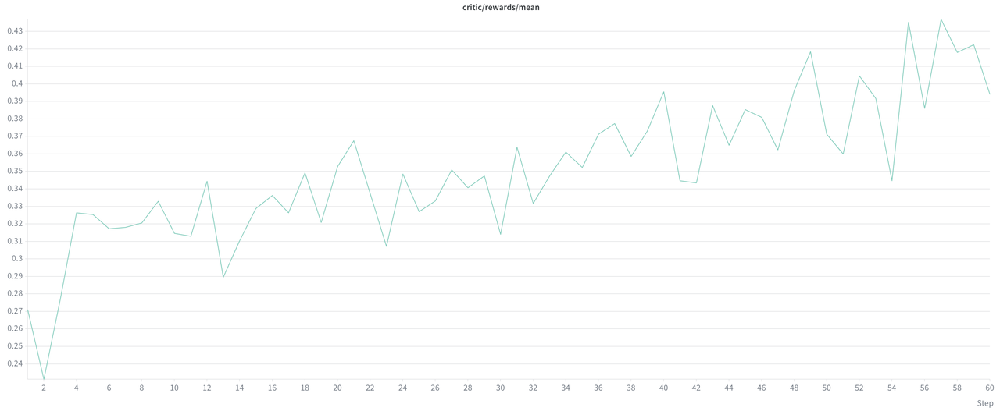
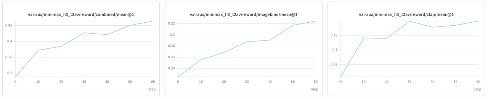
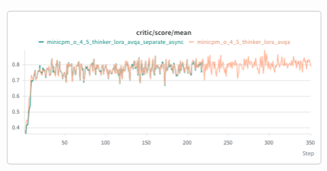
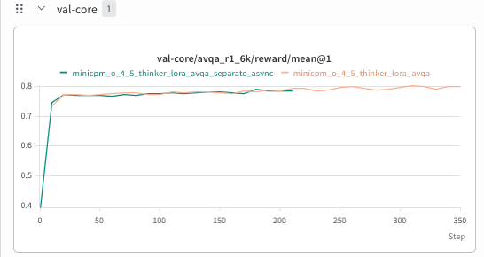

VeRL-Omni v0.3.0：异步训练与更广泛的多模态后训练
继 8 月发布 v0.2.0 后，VeRL-Omni v0.3.0 进一步扩大了单一统一栈中可通过强化学习训练的任务范围。本次发布将异步执行扩展到更多多模态 RL 工作负载，让 V1 trainer 成为默认选择，并将后训练覆盖范围扩展到图像、视频、音频和多模态理解。
在 v0.2.0 的 rollout 批处理与可复用模型适配器基础上，这次的重点是让整个流水线协同工作：生成、奖励评估、策略更新和权重同步。
两个端到端配方展示了其实际意义：
- MiniMax H3 使用 DiffusionNFT 进行音视频后训练；
- MiniCPM-o 4.5 使用 GSPO，并支持 colocated-sync 或 separate-async 执行。
两者共同说明一个重要设计原则：正确的执行模式取决于工作负载。只有当 rollout 与训练的重叠收益能够抵偿为各角色分配资源的成本时，重叠执行才有帮助；现在可以准确测量这种权衡。
发布资料：v0.3.0 release notes · 代码仓库 · v0.2.0 博客
1. 异步与解耦的 RL 执行
多模态 RL 包含多个昂贵阶段，而且每个阶段的资源需求不同。自回归模型可能花很长时间生成回答；扩散模型需要反复执行去噪步骤；音视频奖励还会增加解码和评分模型推理。严格交替的循环会在某个角色工作时让另一个角色闲置。v0.3.0 通过更丰富的执行路径打破这一瓶颈：
- 完全异步 rollout 现已扩展到 Qwen3-Omni 的文本和音频输入训练，使用 release notes 中列出的受支持 FSDP 配方。
- Separate-async Omni 训练 将 actor 和 rollout 引擎放在独立 GPU 池中。生成和训练通过 replay buffer 连接，可配置的同步间隔控制 rollout worker 接收策略更新的频率。
- Separate-async 扩散训练 增加权重同步和动态混合 rollout 切换。当 replay buffer 数据不足时，可以临时把 colocated actor 副本借给 rollout，并在需要训练时收回。
- 扩散模型在线策略蒸馏（OPD） 增加异步 teacher 调度和独立 teacher 路由，让 teacher 执行可独立于 actor 管理。
这些变化的重点是提供选择，而不是给出一套适用于所有任务的规定。下文 MiniCPM-o 案例说明，GPU 划分、生成长度与 trainer 的关键路径必须结合起来测量。
2. 共享的 V1 训练基础
围绕 TransferQueue 和 ReplayBuffer 构建的 V1 trainer 现在成为默认实现。v0.3.0 将 V1 同步配方扩展到多种扩散模型，同时强化 rollout 与训练间的数据交接：成组轨迹一起写入，减少不必要的数据读取，并进一步验证调度与批次顺序。
rollout 栈升级到 vLLM 0.30.0 和 vLLM-Omni 0.30.0（12e9280）。生命周期变化让请求取消与策略更新更明确：暂停前先中止请求，sleep/wake 状态转换必须收到确认，权重更新失败会传播给调用方。当生成、显存回收和权重同步反复跨越执行边界时，这些行为非常重要。
对于扩散工作负载，prompt embedding 缓存避免重复编码；rollout sequence parallelism 与 VAE parallelism 提供更多扩展控制。具名媒体产物（named media artifacts）明确标记图像、视频、音频和 latent 输出，让奖励函数与导出器消费声明的输出，不再根据张量形状猜测模态。
3. 配方与训练结果
3.1 MiniMax H3：音视频联合后训练
MiniMax H3 同时生成视频和音频，因此其后训练流水线必须在生成、奖励评估、actor 更新和导出过程中保留两种模态。v0.3.0 为 H3 增加 FlowGRPO 与 DiffusionNFT 训练支持。这里重点介绍 DiffusionNFT 的 T2VA 和 FL2VA 案例。
- T2VA：从文本生成音视频。
- FL2VA：默认使用首帧图像生成音视频。
frame_mode/FRAME_INDICES协议也支持last和first_last；本案例使用FRAME_INDICES='[0]'，仅固定首帧。
两者都使用 vLLM-Omni 执行 rollout、Diffusers/FSDP2 执行 actor 训练，并由 VeRL-Omni 负责编排、奖励和策略同步。在 FL2VA 中，条件帧 latent 保持固定，训练目标只优化生成内容。
DiffusionNFT 通过正向过程训练目标进行奖励引导优化，无需为每个反向去噪步骤保存 transition log-probability。案例使用 CLAP 衡量文本与音频对齐，并使用 ImageBind reward（CC-BY-NC-SA）衡量音视频对应关系。
流水线将两条路径分开：vLLM-Omni rollout 引擎根据 prompt 生成音视频——在本 FL2VA 案例中还包含固定首帧 latent——并把解码媒体传给奖励评分器；与此同时，干净 latent 和条件元数据进入 Diffusers/FSDP2 actor 进行训练。
T2VA 示例脚本默认使用 ROLLOUT_TP=2、ROLLOUT_N=16；FL2VA 使用 ROLLOUT_TP=4、ROLLOUT_N=16。下表是 launcher 默认值，只描述案例配置，不是不同版本间的性能对比。两个 DiffusionNFT launcher 都设置 trainer.use_v1=false：H3 FlowGRPO 在 v0.3.0 已有 V1 同步配方，但这些 DiffusionNFT launcher 仍使用旧 V0 路径，因此以下结果不应理解为 V1 结果。
| 设置 | T2VA | FL2VA |
|---|---|---|
| GPU / rollout tensor parallelism | 8 / TP=2 | 8 / TP=4 |
| 每个 prompt 的样本数 | 16 | 16 |
| 训练 / 验证分辨率 | 256×384 / 512×768 | 288×448 / 576×928 |
| 帧数 | 121 | 请求 96；vLLM-Omni 对齐到下一个 17n+5 边界，即 107 |
| rollout / 验证去噪步数 | 10 / 40 | 10 / 40 |
| LoRA rank / alpha | 64 / 128 | 64 / 128 |
| 奖励 | CLAP + ImageBind | CLAP + ImageBind |
报告的 T2VA 运行中，critic/rewards/mean 从约 0.27 开始，在约 60 个步骤内上升至接近 0.4。

报告的 T2VA 训练奖励。
奖励上升表明所选奖励信号得到优化，但它本身不能证明整体视觉质量或时间一致性普遍提升。下面的分项验证奖励和固定样本输出提供互补检查。

应结合阅读 CLAP、ImageBind 与综合验证奖励，不能把聚合值当作完整质量评估。
案例使用相同 prompt、随机种子和推理设置比较基础模型与训练后输出。其中一个 prompt 是：“17 世纪的帆船在暴风雨中破浪前行。”
左：MiniMax H3 基础模型。右：MiniMax H3 + DiffusionNFT。
单独打开基础模型视频 · 单独打开 DiffusionNFT 视频
这是参考文章中的定性案例，不是完整基准测试。预览视频没有声音，不能展示音频质量或同步效果。
该集成也说明了为何必须显式验证训练—推理一致性：H3 的训练和 rollout 引擎使用不同权重布局，需要把 LoRA 映射到融合推理投影；时间步和 velocity 约定需要模型专用处理；音频必须同时送达奖励模型与导出输出。仅靠 loss 或奖励曲线变化无法证明三者都正确。
可从 v0.3.0 H3 DiffusionNFT 配方 开始。
3.2 MiniCPM-o 4.5：GSPO 的同步与 separate-async 对比
MiniCPM-o 4.5 Thinker 训练把 Group Sequence Policy Optimization（GSPO）用于音视频问答（AVQA）。Separate-async 配方把 FSDP actor 与 vLLM-Omni rollout worker 放在独立资源池，通过 replay buffer 让生成提前运行。
训练质量。 PR #629 报告了非常接近的早期收敛结果：第 13 步的 score，separate-async 为 0.764，colocated sync 为 0.762；第 10 步的验证奖励二者均为 0.747。曲线显示，在共同训练窗口内行为相似。

训练平均分随步骤变化。青色：separate-async；橙色：colocated sync。同步运行持续时间超过图中异步运行。

共同窗口内的学习行为相当；这些曲线没有测量达到目标质量所需的时间。
执行效率。 后续实验通过强制响应长度来研究资源放置决策。在单节点 4×H800 80 GB、学习率相同的条件下，实验比较：
- colocated 4+0（2×TP2），
train_batch_size=128； - separate-async 3+1（1×TP1），
train_batch_size=120，ppo_mini_batch_size=15，即每步 8 个 mini-batch。
两组不能共用 batch size 128：rollout.n=16 时，colocated 每步产生 128×16=2048 条轨迹，无法被 3 个 FSDP rank 整除；120×16=1920 则可以。由于 prompt 数量不同，下表同时报告秒/步和秒/prompt，资源放置结论以每 prompt 指标为准。
| 平均响应长度 | Colocated 4+0（2×TP2），batch 128 | Separate-async 3+1（1×TP1），batch 120 |
|---|---|---|
| 约 101 token（自然长度） | 194.8 s/步；1.522 s/prompt | 199.5 s/步；1.663 s/prompt；约慢 9% |
| 512 token（强制） | 259.7 s/步；2.029 s/prompt | 244.7 s/步；2.039 s/prompt；基本持平 |
| 1024 token（强制） | 360.1 s/步；2.813 s/prompt | 314.9 s/步；2.624 s/prompt；约快 6.7% |
数据是一次运行中连续 20 步（第 3～22 步）的稳态均值，而不是独立试验。长度通过 rollout.ignore_eos=True + max_response_length=N 强制设置。每 prompt 数值用秒/步除以对应组的 train_batch_size。
对于短的自然回答，separate-async 3+1 每 prompt 约慢 9%；到 512 token 时两者基本持平；在 512～1024 token 之间，separate-async 开始超过 colocated，并在 1024 token 时每 prompt 约快 6.7%。原始秒/步指标更早、更明显地偏向 separate-async，但因为异步组每步处理的 prompt 更少，该指标会夸大收益。
实际建议是：对于短回答、由 trainer 主导的工作负载，colocated sync 仍是正确默认值；当回答足够长、生成占主导，且模型允许 TP1 rollout 副本时，3+1 式 separate-async 可以取胜，而且长度越长优势越大。
标记版本的 separate-async launcher 默认使用 2 张 trainer GPU + 2 张 rollout GPU、train_batch_size=128。按照配方文档准备模型和 AVQA 数据后，可用以下命令复现 3+1 / 120 实验：
bash examples/gspo_trainer/minicpm/run_minicpmo_4_5_thinker_gspo_lora_avqa_separate_async_v1.sh \
data.train_batch_size=120 \
actor_rollout_ref.actor.ppo_mini_batch_size=15 \
trainer.n_gpus_per_node=3 \
actor_rollout_ref.rollout.n_gpus_per_node=1
4. 模型与算法扩展
本次发布同时扩展新集成与现有模型系列。表中列出具体新增项；已有模型增加新配方不计为新模型。
| 模型 / 范围 | v0.3.0 新增内容 | 参考 |
|---|---|---|
| MiniMax H3 | 面向文本、关键帧和参考条件音视频生成的 FlowGRPO 与 DiffusionNFT；GPU 与 Ascend NPU 配方 | FlowGRPO #368、DiffusionNFT #383 |
| BOOGU-Image | 文生图与编辑的 FlowGRPO；DiffusionNFT，包括无 CFG 的 Pick-a-Pic 配方 | #332、#765 |
| MiniCPM-o 4.5 | Thinker AVQA GSPO、separate-async GSPO，以及图像/音频单模态偏好批次的离线 DPO | #572、#629、#550 |
| Qwen3-TTS | GRPO、Hindi SFT-LoRA/GRPO 配方，以及通用 Talker RL 接口 | #428、#590 |
| FLUX.1-dev | DanceGRPO 训练 | #532 |
| LTX-2.3 | V1 sync FlowGRPO 配方，以及 Ascend NPU 上的 T2AV OmniNFT LoRA | #574、#750 |
| Qwen3-Omni | 扩展 async、DAPO、OPD、NPU GSPO 和 Megatron 配方覆盖；受支持的异步路径使用 FSDP | 支持详情 |
| SD3.5 | Direct Group Preference Optimization（DGPO），包含 V1 OCR LoRA 配方 | #733 |
| 扩散蒸馏 | 独立 DMD2 loss 与配置 | #545 |
| 扩散 OPD | 异步 teacher 调度与独立 teacher 路由 | #427、#495 |
| Qwen-Image / Qwen-Image-Edit / Wan2.2 | 为现有算法提供更广的 V1 同步配方覆盖 | 配方列表 |
硬件覆盖也在扩大：统一的 Ascend Dockerfile 覆盖 A2、A3 和 A5，并新增 AMD ROCm Dockerfile 与安装指南。可用性仍取决于具体配方。VeOmni 后端集成还为 Qwen-Image 和 Qwen3-Omni 提供更多 actor 训练选项。
5. 入门与升级说明
选择适合模型、任务和硬件的 v0.3.0 配方，然后按照对应安装说明操作。复用旧 launcher 时，应先检查以下变化：
- Trainer： V1 已成为默认值（
trainer.use_v1=true），旧 V0 已弃用。旧入口必须显式设置trainer.use_v1=false；如有已迁移配方，应优先采用。 - 离线 DPO 仍使用 V0： 它继续运行于 V0 trainer（#650），因此也必须显式设置
trainer.use_v1=false。这包括上表中的 MiniCPM-o 4.5 离线 DPO 配方，而不只是尚未迁移的旧脚本。 - 具名扩散媒体产物： 未标记的扩散 rollout 张量现在会被拒绝（#557）。读取旧 raw payload 的自定义 rollout adapter 和 reward client 必须迁移到具名产物协议：
media_artifact__<name>与metadata.media_artifacts。 - 注意力后端采用 fail-closed： 缺少 FlashAttention 内核时会在启动阶段报错，不再静默回退到 native/SDPA（#530）。需要安装缺失的内核依赖，或显式选择受支持的后端。
- 依赖： 使用 vLLM 0.30.0、vLLM-Omni 0.30.0（
12e9280）、Python 3.11+、Diffusers 0.40.0+ 和本次发布的 CUDA 13.0+ 软件栈。早期 v0.3.0rc1 的 engine pin 不受支持；Ascend 用户应使用更新后的固定环境。 - Qwen3-Omni launcher： 使用
verl_omni.trainer.main_omni与当前配方。旧verl.trainer.main_ppolauncher 和旧 monkey patch 已移除。
可查看完整迁移细节，选择配方并比较自身工作负载的质量和实际耗时，再通过项目仓库分享结果或贡献。
本文由 Codex 根据 vLLM 英文原文翻译整理；如有歧义，请以原文为准。